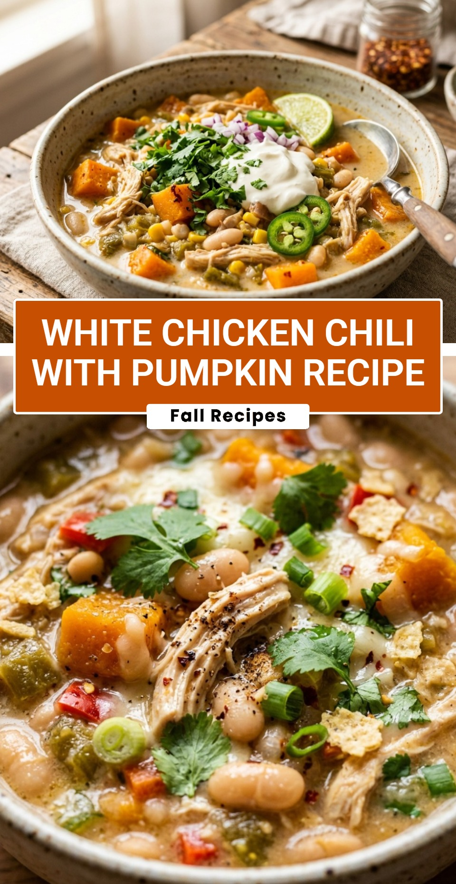

White Chicken Chili With Pumpkin Recipe
October 20, 2026

As the leaves begin to change and the air turns crisp, there is nothing more comforting than a warm bowl of chili. This White Chicken Chili with Pumpkin is a unique twist on a classic favorite. By adding pumpkin puree, you get a beautiful golden hue and a velvety texture that makes this dish feel extra special. It is the perfect meal for a cozy weeknight dinner or a festive fall gathering.
Recipe Information
Prep Time: 15 minutes
Cook Time: 30 minutes
Total Time: 45 minutes
Servings: 6 servings
Difficulty Level: Easy
Nutrition Information
Calories per serving: 325 kcal
Protein: 28g
Carbohydrates: 26g
Fat: 12g
Fiber: 8g
Sugar: 5g
Sodium: 850mg